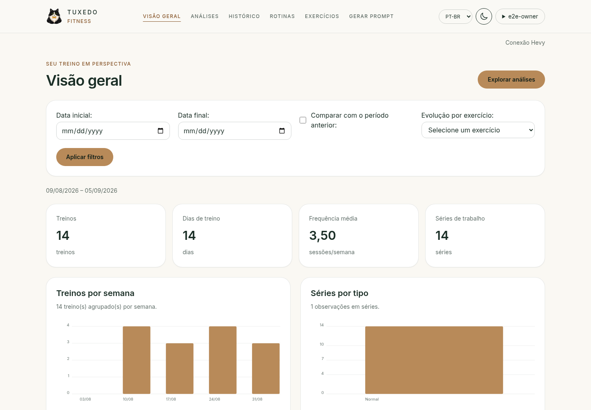
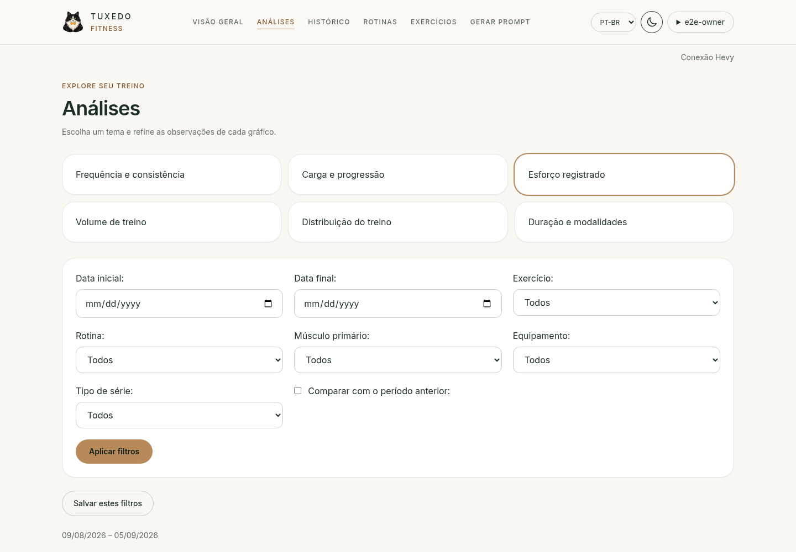
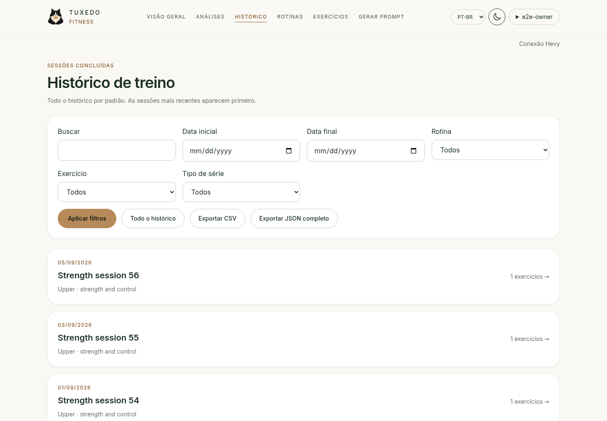
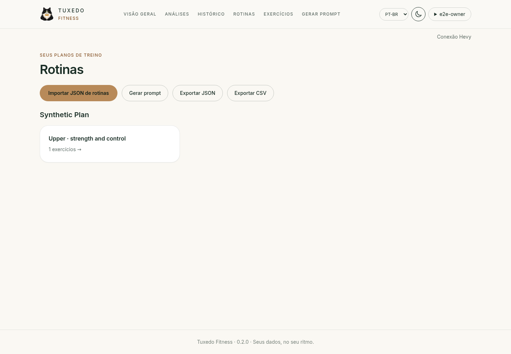
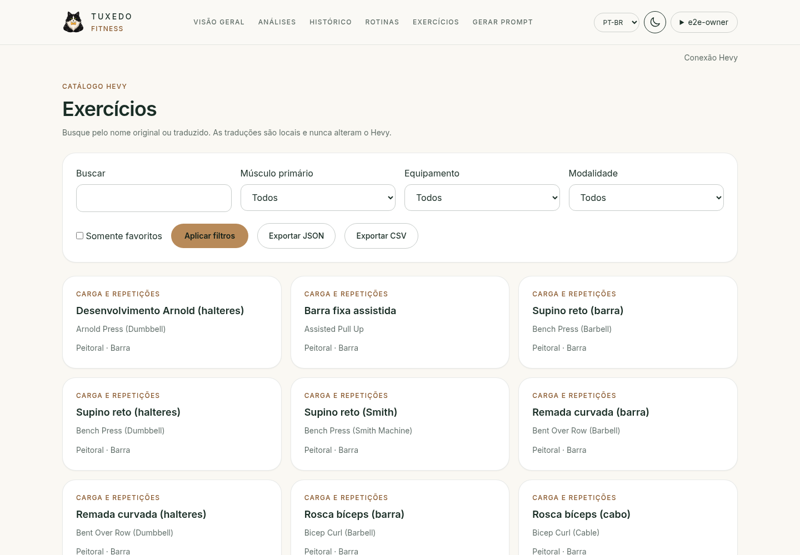
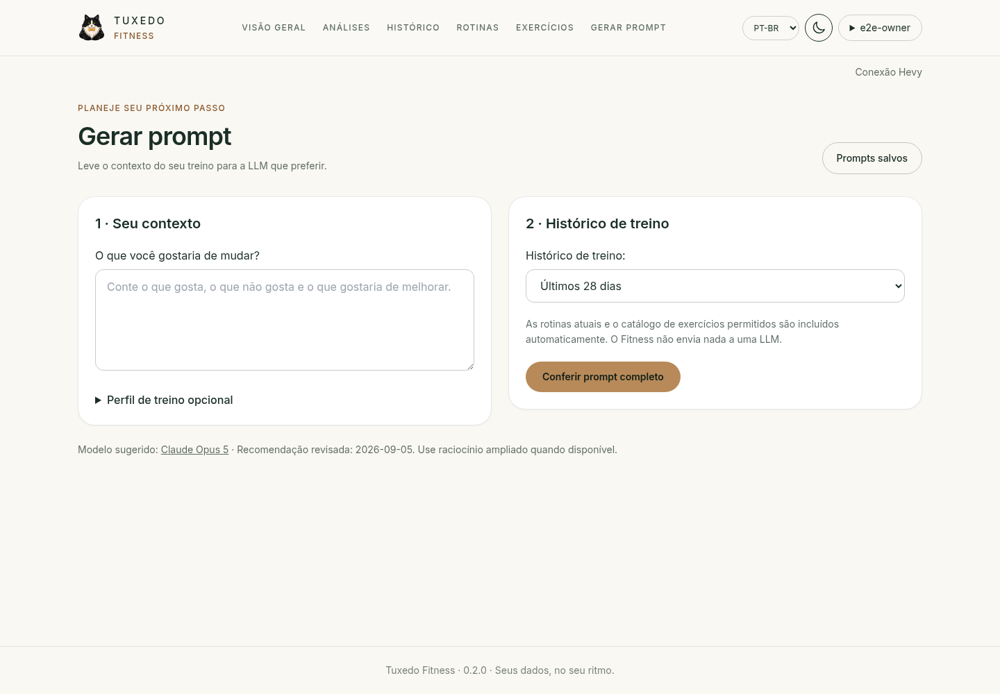

Tuxedo / Fitness · 0.2.0
Conheça o Tuxedo Fitness
Prévia estática com dados inteiramente sintéticos. Nenhuma conta real ou conexão Hevy é usada.
Visão geral

Análises

Histórico

Rotinas

Exercícios

Gerar prompt
